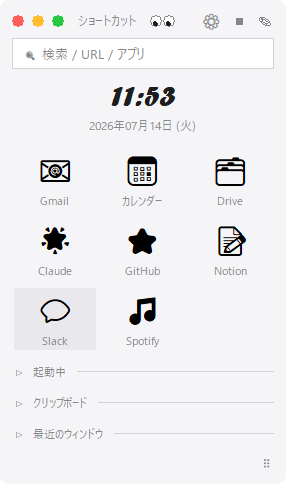
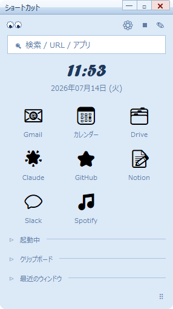
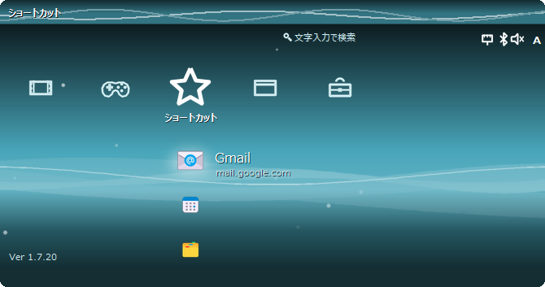

気分と作業に合わせて、ワンクリックで切替



小さな1本のバーに、必要なものぜんぶ
ショートカット、起動中アプリ一覧、時計、クリップボード履歴をまとめて常駐。
ウィンドウの中身をミニ表示。変換・解析の完了を見張って通知も。
月替わりカラーの十字メニュー。Steam / Epic のゲームが自動で並ぶ。
図面・現場フォルダ・CADなど仕事道具を専用列に。効率が上がる。
文字を打つだけで全カテゴリを検索。式を打てば電卓にもなる。
ミニマル・クラシック（青）・ガラス風・レトロ携帯機風。さらにProは壁紙モードも。
サイズ・秒表示・書式を自由に。Proでは書体や色も。
新バージョンは起動時に自動更新。渡したあとも手間ゼロ。
無料でもほぼ全部使える。Proはもっと深く。
| 機能 | 無料 | Pro |
|---|---|---|
| 標準ランチャー・検索・電卓・全テーマ | ✓ | ✓ |
| 覗き窓・全ウィンドウ一覧・重力モード ほか | ✓ | ✓ |
| 時計カスタマイズ（サイズ・秒・書式） | ✓ | ✓ |
| 時計の書体・カスタム色 | — | ✓ |
| 壁紙モード（好きな画像をバー全面に） | — | ✓ |
| カスタムカテゴリ（自分専用の列） | 1つまで | 無制限 |
| PiP実映像＋クリック転送＋見張り | — | ✓ |
はい。標準機能はすべて無料です。Pro版は一部の追加機能を解放するものです。
不要です。exeをダウンロードしてダブルクリックするだけ。必要な実行ライブラリは同梱済みです。
個人開発のため署名が無いだけで動作に問題はありません。「詳細情報」→「実行」で起動できます。
作者のおすすめは、Windowsの標準タスクバーを隠してショートカットバーをタスクバー代わりにする使い方です。設定は2ステップ:
アプリの切替・時計・クリップボード履歴はバーに揃っているので、標準タスクバーなしで画面を広く使えます。
同じメールアドレスとキーでそのまま再認証できます。回数制限はありません。
各種クレジットカード・Apple Payに対応（Stripeで安全に決済されます）。PayPayは現在審査中で、近日対応予定です。